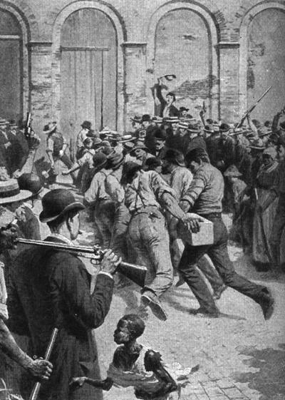
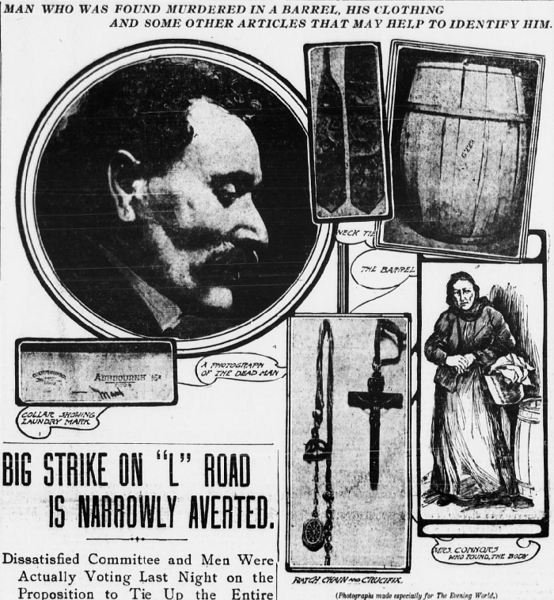
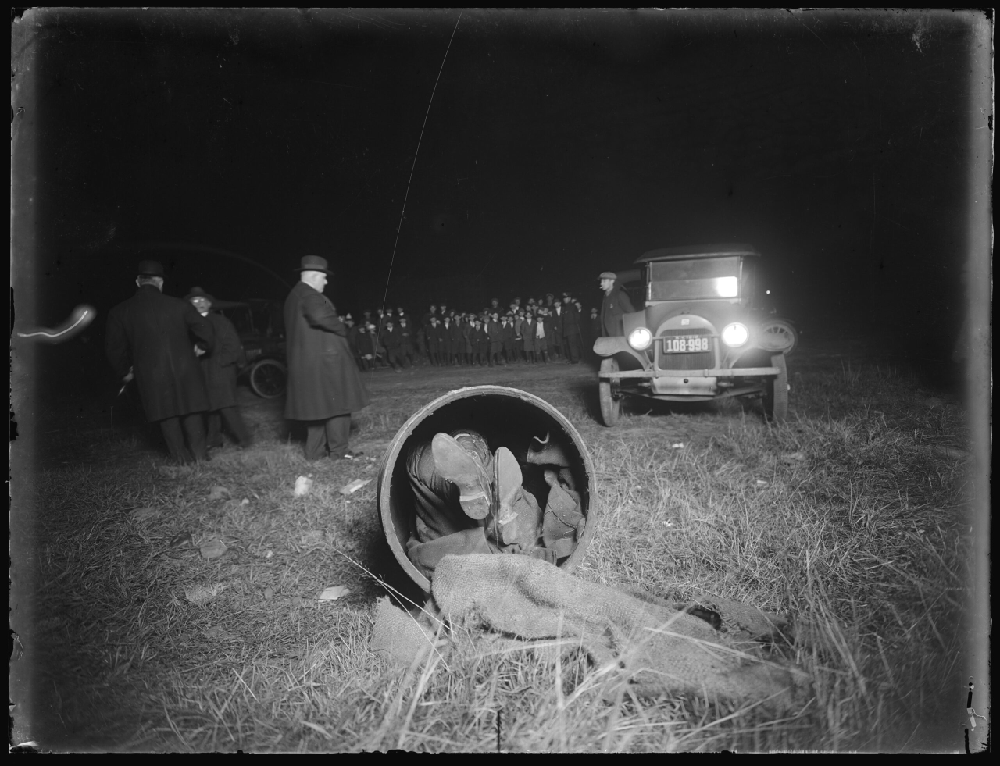
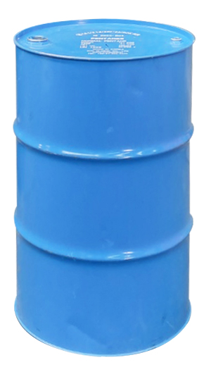
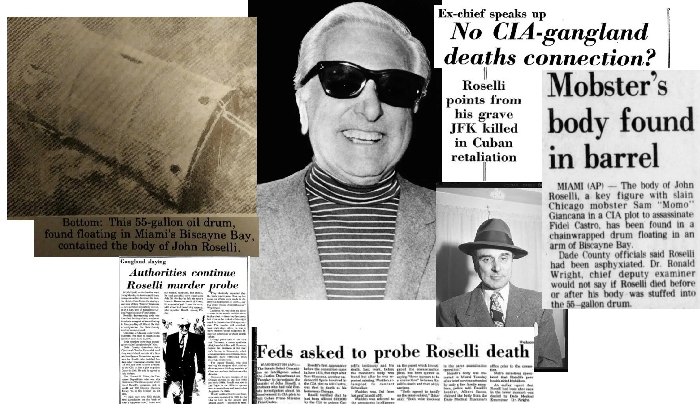
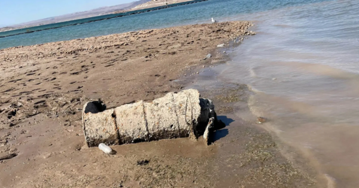

드럼통에 살해된 희생자의 시신을 넣어 유기하는 행위는 악명 높은 범죄 수법 중 하나인데
범죄조직으로써는 19세기 후반 및 20세기 초부터 미국의 이탈리아계 마피아가 처음으로 애용하던 것으로 알려져 있다.
20세기 초 뉴욕에는 시칠리아 마피아 조직과 느슨하게 결성된 갈취 조직을 비롯해 수많은 이탈리아계 범죄조직이 활동하고 있었다. 다음 세 가지 종류를 구분할 필요가 있는데 어쨌든 셋 다 이탈리아계가 주축이 되었다는 것이 공통점이다.
1. 블랙핸드 갱단: 조직적으로 운영되는 마피아가 아니라, 느슨하게 결성된 갈취 범죄집단인 경우가 많았다.
2. 시칠리아 마피아 조직: 시칠리아의 범죄 네트워크와 연계된 보다 체계적인 범죄조직이었다.
3. 미국 마피아 패밀리: 1920~1930년대를 거치며 오늘날 알려진 것과 유사한 위계적 조직구조를 발전시켰다.
이전에도 범죄에서 드럼통에 시신을 유기한 사례는 종종 있었지만 1870년부터 이탈리아계 마피아들이 유용히 쓰기 시작했는데 1895년부터 세간에 드러났다고 한다.
시칠리아계 프로벤자노 패밀리(Provenzano crime family)가 뉴올리언스에서, 그리고 모렐로 패밀리(Morello crime family)이 뉴욕에서 사용한 이 수법은 결국 당국의 주의를 끌었으며, 마피아의 존재를 세상에 드러내는 계기가 되었다.

당시 신문들은 이 사건들을 통해 이탈리아계 이민자 사회 내부에서 활동하는 정체불명의 범죄조직을 설명하려 했다. 이러한 보도는 이탈리아계 이민자와 범죄조직을 동일시하는 반이탈리아계 편견을 강화하기도 했다.
드럼통 살인은 뉴올리언스 경찰서장 데이비드 C. 헤네시의 수사를 포함한 조사에 기여했으며, 마피아가 저지른 것으로 추측되는 헤네시의 1890년 암살 사건은 미국 역사상 가장 큰 규모의 집단 린치 사건 중 하나로 이어졌다.
이후 뉴욕 탐정 조셉 페트로시노의 드럼통 살인 사건 수사는 블랙 핸드와 모렐로 일당에 대한 대대적인 탄압으로 이어졌으며 1909년 페트로시노 본인 또한 암살되었다.

그러다가 벌어진게 1903년 베네데토 마도니아(Benedetto Madonia) 살인사건으로 당시 미국인들에게 마피아=드럼통 이미지를 각인시켰다.
원래 마도니아는 버팔로에서 뉴욕으로 온 이탈리아 이민자로, 뉴욕의 모렐로 범죄조직과 연관된 위조지폐 제조 조직에 관여했다.
사건의 경위는 다음과 같다.
1. 1903년 마도니아의 처남 주세페 데프리마(Giuseppe DePrima)가 위조지폐 제조 사건과 관련해 체포됨
2. 마도니아는 데프리마에게 지급해야 할 돈을 받아내기 위해 뉴욕으로 향함
3. 범죄조직원들이 돈을 지급하지 않자, 해당 조직의 범죄 행위를 당국에 폭로하겠다고 위협한 것으로 알려졌음
4. 4월 13일 조직원들을 만난 뒤 실종됨
5. 다음날 4월 14일, 맨해튼 이스트사이드에서 드럼통 안에 수차례 찔리고 목이 그인채(성기를 잘라 입에 쑤셔넣었다는 얘기도 있다) 들어있는 그의 시신이 발견됨
수사 과정에서 이 사건은 주세페 모렐로와 이그나치오 루포를 중심으로 한 범죄조직과 연관되었음이 밝혀졌다. 당국은 '황소 페토(Petto the Ox)'라는 별명으로 알려진 인물 등 여러 용의자를 체포했지만, 아무도 제대로 불지 않아 살인 혐의를 성공적으로 입증하지 못했다.
이 사건은 당시 미국 사회에 큰 파장을 일으켰으며, 뉴욕에서 활동하던 시칠리아계 범죄 네트워크의 존재를 전국적으로 알리는 계기가 되었다.

1911년 뉴욕주 로체스터의 프란체스코 만젤 살인사건과 1918년의 브루클린의 가스파르 칸델라 살인사건은 마도니아 사건 등이 세간의 주목을 받은 이후에도 드럼통을 이용한 시신 유기가 계속되었음을 보여주며
100명이 넘는 살인 사건의 용의자인 모렐로 일당은, 살인 사건들로 인해 현지 당국으로부터 원치 않는 주목을 받게 될 때까지 30년이 넘는 세월 동안 드럼통 살인 수법을 계속 사용했다.
다른 비이탈리아계 범죄자들도 경찰의 수사망을 모렐로 일당과 다른 이탈리아계 마피아로 따돌리기 위해 이와 똑같은 수법을 사용했다.

마피아는 왜 드럼통을 애용했을까? 여기에는 몇 가지 실용적, 심리적 이유가 있었다.
첫째는 당연히 은폐하기 쉽다는 것이었다. 당시 흔하게 볼 수 있었던 드럼통은 시신을 외부에서 즉시 알아볼 수 없도록 감출 수 있었으며, 일반적인 화물처럼 취급해 시신을 옮긴 후 여러 장소에 버릴 수 있었다.
둘째는 반대로 종종 시신을 공개적으로 발견하게 함으로써 경쟁 조직이나 밀고자들에게 경고를 보낼 수 있다는 것이다. 마피아의 살인은 단순히 특정 인물을 제거하는 것만이 목적이 아니었다. 때로는 배신이나 조직에 대한 도전이 어떤 결과를 초래하는지 보여주기 위한 수단이기도 했다.
금주법 시대와 20세기 중반에 이르면서 마피아의 시신 처리 방식은 다양해졌으며 드럼통은 여전히 많이 쓰였지만 일반적인 수법이라기보다는 문화적 상징에 가까워졌다.

어쨌든 이후에도 마피아는 드럼통을 사용했으며 20세기 미국에서 발생한 마피아 연관 드럼통 살인 사건 중 가장 유명한 사례는 1976년 존 로셀리(John Roselli) 살인사건인데
존 '조니' 로셀리는 시카고 아웃핏과 연계된 영향력 있는 조직범죄 인물이었다. 할리우드와 라스베이거스 카지노 업계에도 인맥을 가지고 있었으며 쿠바의 피델 카스트로를 제거하려는 CIA의 비밀 공작에도 관여한 인물이었다.
사건의 경과는 다음과 같다.
1. 1976년 7월 28일: 로셀리가 플로리다에서 실종됨
2. 1976년 8월 7일: 시신이 마이애미 인근 덤파운들링만(Dumfoundling Bay)에 떠 있는 55갤런짜리 강철 기름 드럼통 안에서 발견됨
3. 질식으로 사망한 것으로 밝혀졌으며, 드럼통에는 무거운 사슬이 달려 있었지만 결국 수면 위로 떠오름
그의 살인 사건은 현재까지 공식적으로 미제 사건으로 남아 있다.

2022년 5월, 보트를 타던 사람들이 네바다주 레이크 미드에서 심하게 부식된 드럼통 하나를 발견했고 내부에는 사람의 유해가 들어 있었다. 이 발견은 라스베이거스의 마피아 활동 시기에 벌어진 살인 사건과 관련이 있다는 추측을 불러일으켰다.
그러나 2026년 10월, 당국은 피해자의 신원을 에드워드 렐버리언 잭슨(Edward Lelburian Jackson)으로 확인했다. 그는 아칸소주 출신 남성으로, 1980년대 초 살해되었을 가능성이 있는 것으로 추정되었다.
수사 당국은 조직범죄 연루 가능성을 완전히 배제하지 않았지만, 그의 죽음이 마피아와 직접적으로 연관되었다는 증거는 발견하지 못했다.


헉